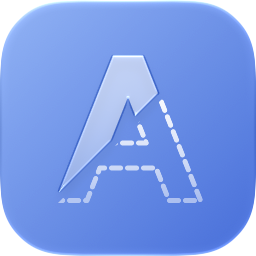
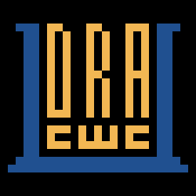
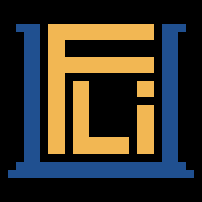

Mac
Alphade
Remove semi-transparent watermarks from your videos on Mac.
做自己想用的工具。
Apps, a browser extension and terminal tools by Vulcan Shen.
Vulcan Shen 的 app、瀏覽器擴充功能與終端機工具。
瀏覽器擴充功能
Chrome · Edge · Firefox
Side-by-side bilingual translation for web pages and PDFs. No AI, no API key, no account, no ads.
終端機 app
The terminu family: terminal UIs you can use without reading the docs. Every app runs on the same keys, Tab Enter Esc Space ? q, and when in doubt, press Space.
terminu family：不看文件就能用的終端機介面。每個 app 都用同一組按鍵，不確定的時候，就按 Space。

A sidebar for Claude Code: usage limits, context, cost, git and session stats beside the transcript.
A screensaver with a PIN lock, for the terminal, wired into tmux and screen.
A terminal browser that reads a web page as a document.
A terminal front end for ssh and sftp: hosts, many live sessions on one screen, and two-sided file transfer.

A terminal file manager you don't have to learn: mark, copy and move across tabs, find by name or content, preview as you go.
A single-pane Kubernetes workspace: relatives navigation, YAML compare, and a persistent shell built in.
Switch the hosts file between profiles, in the terminal: the office, home, a client's site, one key each.
自己做一個 terminu app